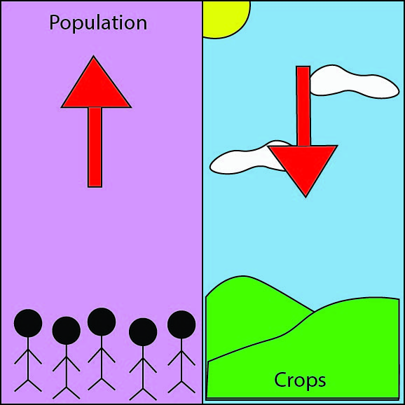

<html>
    <link rel="stylesheet" href="styles2.css">
</html>
<p></p>
<ul>
    <li>As population increases, the demand for food increases</li>
    <li>The demand for increased amount of foods leads to crop failure </li>
    <li>Crop failure leads to the use of chemicals to preserve and grow food at a faster rate.</li>
</ul>